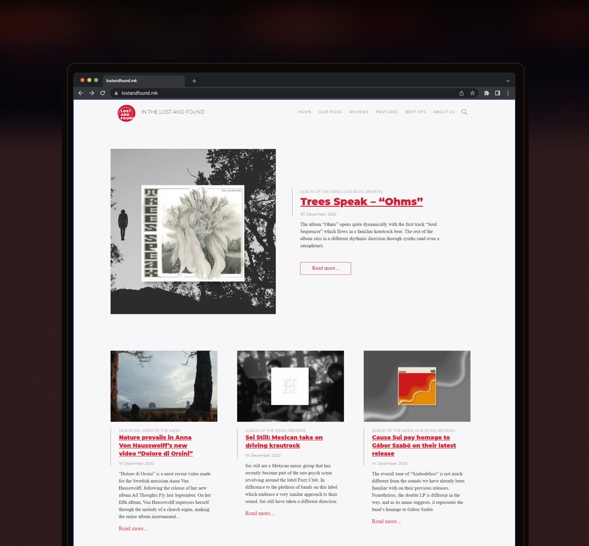
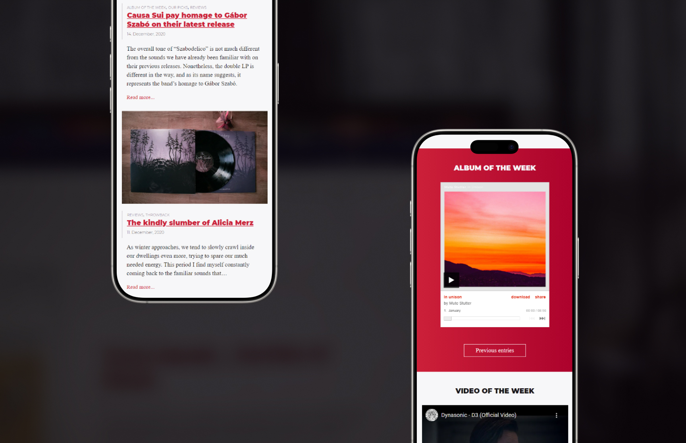
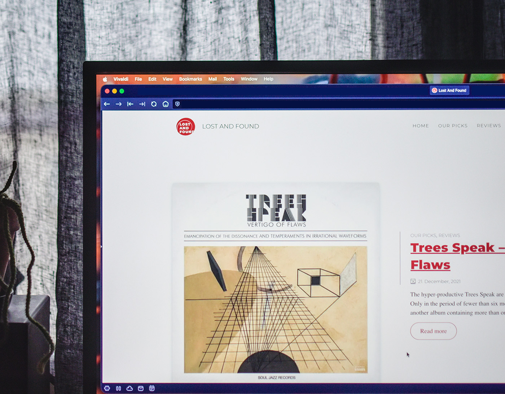

Lost and found website design
-
Client
Lost and found
-
Year
2020
A legacy project for a digital music zine. This design reflects my career-long affinity for independent media.
In a society that overwhelmingly outsources each conscious mental process to machines, writing has been reduced to an archaic mental exercise of the past. For the first time in human history, we are dealing wth a process of human cognitive deskilling and mental atrophy. However, writing is more than just a cognitive exercise; it is a show of character and genuine human expression, regardless of how much the machines can mimic even this.
Lost and Found was started with the idea to engage critically and emotionally with the music that we love and listen to in our home. This project was started before the onset of LLMs, in a time when writing still took mental effort. This is why it had to cease to exist when our son Danil was born. But one day it will shine again.


